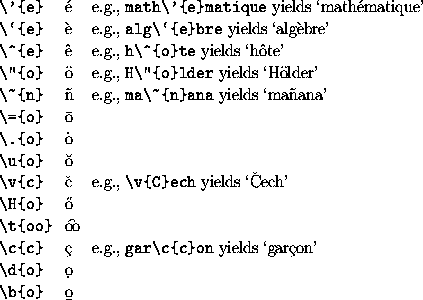

![[GIF Image]](EX_fada.gif)
There are a variety of control sequences for producing accents.
For example, the control sequence \'{o} produces an
acute accent on the letter o. Thus typing
Se\'{a}n \'{O} Cinn\'{e}ide.
produces
Similarly we use the control sequence
\` to
produce the grave accent in `algèbre' and we use
\" to produce the umlaut in `Universität'.
The accents provided by LaTeX include the following:
These accents are for use in ordinary text. They cannot be used within mathematical formulae, since different control sequences are used to produce accents within mathematics.
The control sequences \i and \j produce
dotless i and j. These are required when placing an
accent on the letter. Thus í is produced by typing
\'{\i}.